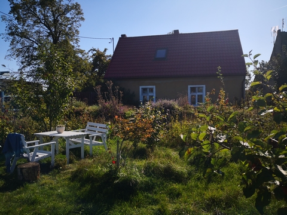

Najpierw był dom. Stary, z lat 30., z duszą ale nieco zaniedbany gdyż dawno nikt w nim na stałe nie mieszkał. Podjęliśmy wyzwanie. Po sporych trudach udało się mu przywrócić dawną duszę i doprowadzić do stanu pełnej używalności.
Najpierw był dom. Stary, z lat 30., z duszą ale nieco zaniedbany gdyż dawno nikt w nim na stałe nie mieszkał. Podjęliśmy wyzwanie. Po sporych trudach udało się mu przywrócić dawną duszę i doprowadzić do stanu pełnej używalności.
Była też działka, która żyła trochę własnym życiem, ale dzięki temu ostały się na niej piękne drzewa owocowe, a także dorodne lipy. Pod czułą opieką Ireny zmieniła się w jeden wielki ogród-sad. Prawdziwy raj dla pszczół!
No właśnie, pszczół...Na to samo wpadł Marian pewnej zimy. Zaczął czytać o pszczelarstwie, zaciekawiło go na tyle że postanowił spróbować swoich sił. A potem - no cóż, potem poszło już z górki, jak sami widzicie!
Od ponad 25 lat prowadzi sklepy zielarskie "Wrzos" w Gnieźnie. Dobry duch pasieki, dba, żeby pszczoły nie były głodne (bogactwo i różnorodność roślin w ogrodzie pasiecznym mówi sama za siebie). Człowiek renesansu, robi zawsze kilka rzeczy jednocześnie. Pasjonatka ekologiczno-naturalnego stylu życia. Po godzinach nasz pasieczny PR-owiec i organizator oraz prowadząca warsztaty.

Kiedyś strażak, obecnie częściej spotykany w pasiece niż we własnym domu. Mimo, że posiada już ogromną wiedzę pszczelarską, z każdym sezonem pszczoły i natura uczą go czegoś nowego. Pszczelarz z powołania, swoim doświadczeniem dzieli się chętnie i szczodrze. Pasją lubi zarażać wszystkich, zwłaszcza tych najmłodszych, dla których często prowadzi warsztaty.